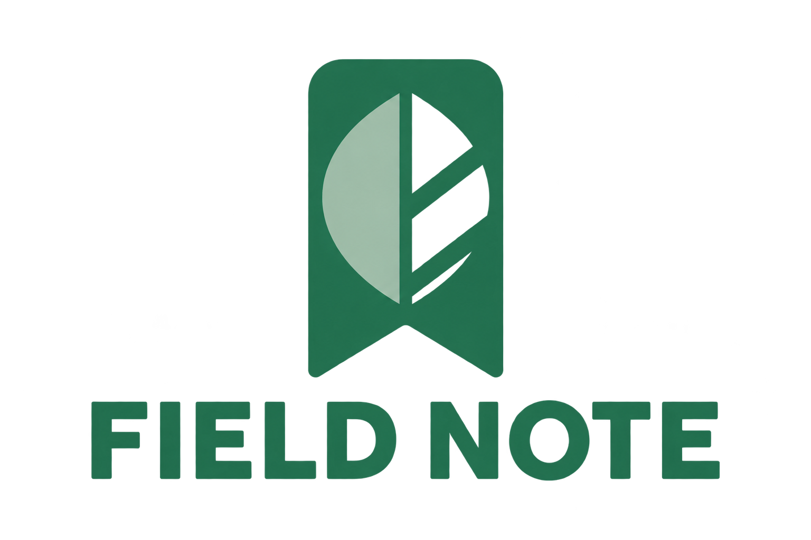

a-v1
1536 x 1024 px
Parent artifact: None · PNG original bytes
Intended colors
Palette p1 · Parent palette: None
Strict constraints · reference
#247A52preserved green symbol and wordmark#99BCA6muted mint accent
Select the more distinct extracted mint estimate as companion while retaining exact locked green; skip near-duplicate green estimates. Extraction represents full-image estimates and includes visible background colors; selection is an assistant judgment.
Selected by assistant
Measured colors
indeterminate · Insufficient evidence
Report report-5aaf0c21d2244f3f8aa3e402f916ed39 · 2026-09-12T15:26:16.025020+00:00
Scope: full_image · 1536 x 1024 px
grid_128_pixel_centers · 16384 positions (1.0%); 2648 core, 371 partial-alpha samples.
#23704F23.1% · 611 samples#226F4F20.5% · 542 samples#216E4E16.0% · 424 samples#9FBCA815.9% · 421 samples#22704F13.6% · 359 samples#226E4E6.0% · 160 samples#236F4F4.5% · 120 samples#2975540.4% · 11 samples
| Target | Match share | Mean ΔE | Max ΔE |
|---|---|---|---|
| #247A52 | 83.2% | 4.00 | 5.00 |
| #99BCA6 | 15.8% | 1.69 | 4.71 |
ΔE threshold: 5; profile: assumed_srgb; policy: logo-color-v1.
- Partial alpha exceeds 10% of visible samples
Requested lockup
- Layout
- stacked
- Symbol position
- start
- Text alignment
- center
- Typography direction
- balanced modern sans serif, medium-bold monoline lettering, open counters and even spacing
- Requested font reference
- Noto Sans KR
This is requested visual direction, not proof of a font file used in the raster. Gallery text uses the CSS system font.
{kind=link}
{kind=link}
{kind=link}